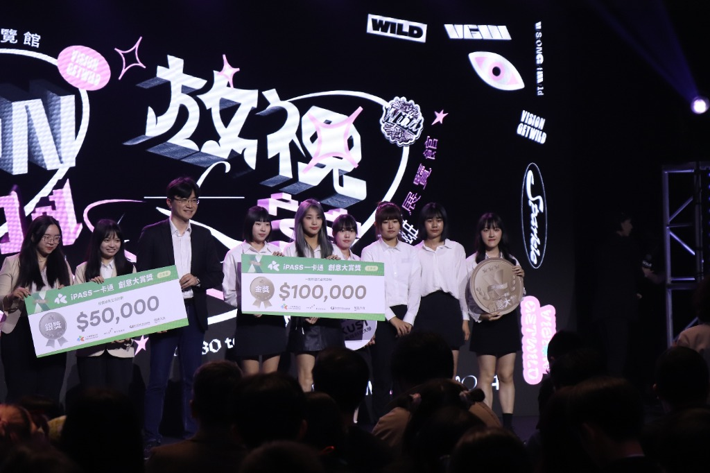

情境 (Situation)
專案需同時構建 Android App 與 Web 網頁雙端，且系統涵蓋飼主與照顧者雙重身分。前期業務邏輯與畫面更新緊密耦合，造成除錯困難。
結合資訊管理全端系統開發實作力，與全國金獎之商業敏銳度與用戶洞察
你好，我是王韻晴 (Alina)。具備資訊管理背景，兼具全端軟體工程實作力與全國商業競賽金獎的痛點洞察敏銳度。
在企業內部系統實作歷程中，我擅長「在模糊中建立結構」——能快速梳理系統脈絡與資料流向，並將使用者的操作痛點精準轉譯為清晰的系統架構與防呆流程。
立志深耕 專案經理 (PM) ｜ 系統分析師 (SA) ｜ IT 流程顧問，期待發揮跨域溝通與架構邏輯思維，協助團隊化繁為簡、穩定推進專案落地。
面對未知技術或複雜歷史系統時冷靜沉著。在實習中擅長主動梳理系統架構與資料流向，快速釐清問題脈絡，從流程根源重構邏輯、化繁為簡。
兼備工程底層與商業洞察。能深刻同理業務與使用者痛點（如為 HR/EHS 規劃雙點名容錯與批次更新），並將抽象需求精準轉譯為資料流與規格架構，拉齊各方共識。
做事有始有終、敬畏流程與規範。實習中嚴格落實企業標準開發流程與 SVN Commit 紀律，每日控管排程，在團隊中始終是讓主管與夥伴放心的靠譜交付者。
敢於面對未知（自學 Summernote、TCPDF 等套件攻堅落地），專案告一段落必進行 STAR 深度復盤，重視「為什麼這樣設計」，將每一次挫折與挑戰提煉為長期的專業資產。
結構化呈現我的專業歷程、榮譽獎項與全端技能積累
展示完整研發產出、原版報告摘要與面試必備的 STAR 深度復盤歷程
針對現代毛孩家庭「臨時出差無暇照護」與「寵物旅館費用高昂」痛點，以 Android Studio 原生開發搭配 Web 後台，打造具備 MVVM 架構、雙向身份切換與即時通訊的互惠照護媒合平台。
市場數據洞察：內政部統計顯示，台灣寵物新增登記數已超越新生兒數量（2023 年新增寵物達 23 萬 1551 隻，新生兒僅 13 萬 5571 人）。少子化使得毛孩成為核心家人，但飼主常面臨臨時加班出差而無暇照料、且寵物旅館費用昂貴的難題。
解方規劃：開發結合 Android APP 與 Web 網站 的「LovePaw 寵物照顧平台」，媒合「需要照料的毛爸媽」與「喜愛動物、想賺取外快的代理照顧者」，打造資訊對等且互惠共生的生活生態。
Android 原生架構：採用 MVVM (Model-View-ViewModel) 模式進行解耦開發，將資料庫 I/O 操作與 UI 介面徹底分離，大幅提升代碼複用性與系統穩定度。
資料庫規劃：於 MariaDB 建立 4 大核心關聯資料表——使用者（Users / 身份權限與經歷）、寵物檔案（Pets / 品種習性）、照護需求（Demands / 地區報酬時段）、經驗交流版（Community / 社群文章）。
• 雙身分管理：一鍵切換「毛爸媽」或「代理照顧者」，維護不同經歷與空閒時段。
• 需求刊登與多維篩選：支援依城市區域、寵物品種、任務時段與報酬快速篩選匹配。
• 即時雙向聊天室：提供照顧者與飼主快速溝通照護細節與預約。
• 經驗交流社群與收藏：毛孩知識文章發布、收藏有興趣的任務以便快速比對。
完整收錄研究動機、國內寵物統計數據、APP vs Mobile Web 使用者體驗比較、MVVM 軟體架構書、系統功能分解圖與 4 大資料表規劃。
專案需同時構建 Android App 與 Web 網頁雙端，且系統涵蓋飼主與照顧者雙重身分。前期業務邏輯與畫面更新緊密耦合，造成除錯困難。
確立標準軟體工程架構，推動 Android MVVM 模式落地，釐清 App 與後端資料庫傳遞協定，確保系統高擴展性與穩定度。
落實 MVVM 解耦：資料庫抽象為 Model，畫面事件交給 View，ViewModel 負責狀態轉換，解決生命週期問題；規劃 MariaDB 4 大標準資料表並建立關聯約束。
成功整合任務篩選、雙向聊天室與討論區，順利交付完整專題報告與展示，展現扎實軟體工程架構思維與團隊協作力。
鎖定後疫情大型演唱會「黃牛猖獗詐騙多」、「粉絲個資洩漏」、「現場驗票大排長龍」與「高碳排交通」痛點，提出整合 iPASS Money 實名制購票、一鍵支付、無紙化電子票夾與大眾運輸乘車碼折扣之全方位商業創新方案，勇奪全國企劃組「金獎」最高殊榮！

市場痛點：大型演唱會需求暴增，伴隨而來的是猖獗的黃牛炒票與詐騙問題，求票粉絲常因私下交易外洩個資；傳統購票流程繁複、人工驗票大排長龍，且印製紙票與開車前往衍生龐大碳排。
整合方案：將 iPASS Money 深度串聯各大售票系統（如拓元、KKTIX），實現「購票即實名」、「一鍵無紙化支付」、「掃碼快速通關」與「乘車碼綠色運輸優惠」，打造安全、便捷且低碳的音樂娛樂生態系。
1. 票券實名制（杜絕黃牛）：利用 iPASS Money 實名認證資料與售票端連動，付款同時完成實名綁定，徹底杜絕轉售暴利與個資外洩。
2. 極簡付款流程：電腦網站購票僅需掃描手機 QR Code，手機購票則直接一鍵跳轉 iPASS Money 完成結帳。
3. 無紙化票夾與快速通關：門票存入 App「文藝活動專區」，現場掃描電子票券入場，大幅縮短排隊等待時間與驗票人力。
4. 綠色大眾運輸折扣（ESG 減碳）：活動日持票者使用乘車碼，享捷運/公車 9 折、客運/台鐵 95 折、高鐵 75 折優惠，鼓勵低碳出行。
• 關鍵夥伴：演唱會主辦方、售票平台、銀行機構、大眾運輸系統（高鐵/台鐵/捷運）。
• 收益流：售票手續費抽成、主辦方合作贊助、聯名推廣行銷收入。
• ESG 永續治理：環境 (E) 無紙化與減碳、社會 (S) 保障消費者權益防範詐騙、治理 (G) 提升營運透明度。
完整收錄研究動機、18-35歲目標客群分析、4大服務特點、服務痛點因應策略、購票/付款流程圖、服務架構圖、商業營運模式與效益評估（共 17 頁）。
競賽需為 iPASS Money 發掘全新應用場景，在全台激烈競爭中，需突破「純電子支付」框架，構建兼顧社會影響力與多方商業利益的可行案。
主導將社會熱點（黃牛票猖獗與減碳）轉化為嚴謹商業企劃架構，完整繪製服務流程圖、產出完整商業營運模式規劃，並擬定痛點防禦對策。
規劃「購票付款 ➔ 票券存入 App ➔ 乘車碼優惠 ➔ 現場快速通關」一體化閉環；拆解不同售票端相容性與主辦方合作誘因，融入 ESG 永續模型提升提案高度。
提案在落地可行性、商業邏輯完整度與永續價值上獲評審一致肯定，勇奪全國「企劃組金獎」第一名最高榮譽！
任職於漢民科技旗下獨立 IT 單位「祥豐有限公司」，配合 Scrum 敏捷協作節奏，自零規劃與重構三大內部核心系統——《點名系統》（緊急疏散 ✕ 課程訓練）、《研發記錄簿簽核系統》（Summernote ✕ TCPDF ✕ Mail 簽核）與《人才招募平台 RMS》（履歷集中庫 ✕ 狀態批次更新），系統均已正式上線運行，大幅提升組織跨部門管理效能。
開發背景與痛點：傳統採用紙本簽到，EHS（環安衛）與 HR 需耗費大量工時手動比對與整理報到名單，流程繁瑣易出錯；在地震等突發緊急狀況下，缺乏即時掌控人員到場率與未到人員名單的動態機制，且無法即時串聯出勤紀錄。
4 大功能模組設計：
• 任務建立：支援 EHS/HR 依情境建立演練或訓練任務，設定時間、地點與應到人員名單。
• 刷卡／帳號雙點名：提供員工以門禁刷卡或電腦帳號輸入報到，具備即時邏輯判斷（已報到／名單外新增／查無此人）。
• 主管即時查詢：主管隨時查閱即時到場率與缺席清單，支援名單 Excel 匯入與出席紀錄匯出。
• 中央資料同步：點名結束後一鍵同步至公司中央進出紀錄資料表與正式出勤系統。
韻晴實作貢獻：主導「點名」、「新增」、「查看」三大頁面邏輯設計與前後端串接；新增「手動輸入帳號」點名機制以確保卡片異常時的容錯彈性；新增歷史任務清理與 Excel 雙向匯入匯出。已正式於全集團演練中落地運行。
開發背景與痛點：研發單位的技術進度多依賴紙本或 Email 傳遞，多層主管簽核過程中常出現流程斷鏈、責任歸屬不明與簽核遺漏問題，缺乏完整歷史追溯機制。
5 大功能模組設計：
• 紀錄填寫與儲存：導入 Summernote 副文本編輯器，供研發人員詳細記錄每週研發進度與成果。
• PDF 產出模組：串接 TCPDF 套件，自動將填寫內容排版生成含標頭之正式 PDF 報表。
• 簽核狀態追蹤：紀錄每筆歷程四態演變（待審核／審核中／已核准／退回），支援操作時間與歷史追溯。
• 權限控管與流程：依身分自動判定研發人員與主管簽核層級。
• Mail 簽核與預覽：系統自動發送通知信至主管信箱，主管可直接在 Mail 中查看 PDF 並點擊簽核/退回。
韻晴實作貢獻：自主研讀並導入 Summernote 編輯器、撰寫 TCPDF 報表排版邏輯、實作全站 UI/UX 頁面、設計資料庫簽核狀態與流程轉移欄位。
開發背景與痛點：原以 Excel 表單與人工溝通進行人才甄選，應徵資料分散、狀態更新延遲，跨部門媒合與決策效率低。
核心功能設計：後台職缺管理、集中化人才履歷庫（條件多維篩選與分頁）、招募流程階段追蹤（初審／面試／錄取／婉拒）、主管「我的最愛」人才清單、面試評語與錄取決策記錄。
韻晴實作貢獻：設計人才清單頁面（整合篩選條件、搜尋欄與分頁機制）；以 AJAX 實作「加入我的最愛」即時更新響應；實作履歷狀態儲存與多筆履歷批次更新功能；與部門主管確認使用習慣以優化動線。
以點名系統、研發記錄簿與人才招募平台為例 ｜ 學生：王韻晴（高科大資管系） ｜ 實習單位：祥豐(漢民)科技股份有限公司
進入漢民科技旗下獨立 IT 單位祥豐，面對多年累積的企業內部龐雜系統與嚴格規範（企業變更管理與 SVN commit 控管），初期對模組設計、資料邏輯及跨部門溝通感到陌生，需快速克服技術挑戰。
獨立承接使用者需求，開立變更單並落實流程，跨前後端自零構建或重構三大核心系統（點名系統、研發記錄簿、RMS 招募平台），確保程式穩定運行且不破壞既有線上功能。
1. 在模糊中建立結構：主動梳理系統架構與資料流向，快速釐清問題脈絡，從流程根源重構邏輯、化繁為簡降低出錯；
2. 全端技術攻堅：導入 Summernote 副文本編輯器、串接 TCPDF 排版輸出正式報表、利用 AJAX 實現即時響應、以 PHP MVC 封裝業務邏輯；
3. 嚴格落實企業規範：落實變更單開立與規範、每日記錄待辦、每週於 Scrum 例會回報並滾動調整優先順序。
成功交付三大系統並推動正式上線，全面取代傳統紙本簽到與分散的 Excel 表單，大幅提升跨部門協作效率與流程透明度，實習考核獲團隊與主管高度肯定。
面試官最關心的核心問題整理，點擊即可展開閱覽我的思考視角
「我兼具『全端軟體工程實作力（高科大資管 ✕ 祥豐(漢民)科技三大系統開發 ✕ Android MVVM 專題）』與『敏銳的商業痛點洞察（iPASS 一卡通創意大賞企劃組金獎）』。在實習期間，我配合企業標準開發規範與 Scrum 節奏，獨立負責點名系統、研發記錄簿與 RMS 招募平台的全端開發與上線驗證，具備『在模糊中建立結構』的系統分析與重構能力；同時具備全國金獎的商業提案思維，能站在使用者痛點與組織效率角度思考，為團隊帶來高穩定度的交付品質與持續復盤優化的動能。」
「我在祥豐(漢民)科技實習時常負責與使用者直接溝通需求、開立變更單。當出現分歧時，我遵循三個原則：
1. 回到痛點與業務目標：先釐清『這個功能是要解決哪種使用情境的阻礙？（例如點名系統是為解決臨時無卡容錯，還是清理歷史任務）』，避免陷入主觀喜好的爭執。
2. 整理具體方案與影響評估：將技術方案轉化為清楚的流程走向圖與選項（比較開發工時、資料庫影響與維護成本），降低他人溝通負擔。
3. 快速小規模原型 (POC)：主動以最小代碼製作介面或流程原型，用實際操作驗證可行性，以數據與事實達成共識。」
「我的目標是成長為兼具『全端技術架構底層 ✕ 敏銳流程分析 ✕ 商業價值落地』的優秀專案經理 (PM)、系統分析師 (SA) 或 IT 流程顧問：
• 第 1 年（系統分析與需求轉譯 SA / 專案執行）：
運用在高科大資管所學以及祥豐(漢民)科技積累的全端開發與資料庫實務經驗，迅速熟悉業務領域流程；擔任工程團隊與業務使用者之間的溝通轉譯者，主導需求訪談、撰寫嚴謹的需求規格書 (SRS) 與流程走向圖，確保需求無損落地並精準交付。
• 第 2 年（敏捷專案管理 PM / 跨部門推動者）：
獨立主持專案推進，熟練運用 Scrum 敏捷協作與滾動式優先級管理；負責跨部門利害關係人協調、時程控管、變更管理與風險防範。發揮『在模糊中建立結構』的優勢，主導從痛點挖掘到正式上線的完整專案生命週期。
• 第 3 年（流程優化與 IT 諮詢顧問 / 產品主導者）：
結合 iPASS 獲獎展現的商業創新思維與實習中獲得的組織人因洞察，具備 End-to-End 的產品與流程重構視角；能為企業客戶或內部部門診斷運作瓶頸，提出具備技術可行性與高 ROI 的數位轉型方案，成為值得信賴的諮詢顧問或核心專案經理。」
「依據我過往在祥豐(漢民)科技獨立推進三大內部系統、以及專題與全國競賽金獎的實務歷程，我的核心個性特質包含：
1. 在模糊中建立結構的『破局者』：
面對未定型、資訊不足或龐雜的舊系統時冷靜沉著。我習慣主動梳理系統架構、釐清業務資料流向，快速看清問題核心脈絡；不只被動修正問題，而是主動為流程建立清晰架構與防呆邊界，化繁為簡。
2. 跨域同理與精準轉譯的『橋樑協作者』：
具備自然的雙向同理心。面對使用者（如 HR/EHS），我能從人性視角感知真實操作痛點（如在點名系統主動加入無卡手動帳號輸入容錯、在招募平台加入批次更新）；面對工程團隊，能精準將業務邏輯轉譯為資料表關聯與狀態機，消除部門溝通壁壘。
3. 嚴謹自律、追求可追溯的『當責交付者』：
做事有始有終、敬畏流程與規範。實習中養成每日待辦控管、落實嚴謹的開發變更流程，並『用 commit 留下負責紀錄』。交代給我的任務必高標準交付，是主管與團隊心中值得託付的可靠夥伴。
4. 主動探索、持續迭代的『自驅學習者』：
面對未知技術（如自學 Summernote、TCPDF、Android MVVM）敢於自主研讀文檔建立 POC 攻堅；專案告一段落必進行深度復盤，將每一次挫折轉化為能力台階。
在團隊中，我常扮演『把抽象想法梳理成具體流程、把各方爭議拉齊為共識方案，並穩健推動落地』的協調推進者角色。」